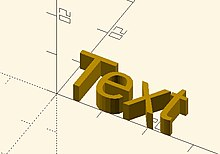

Text can be changed from a 2 dimensional object into a 3D object by using the linear_extrude function.
//3d Text Example linear_extrude(4) text("Text");

Created with the Personal Edition of HelpNDoc: Easy CHM and documentation editor